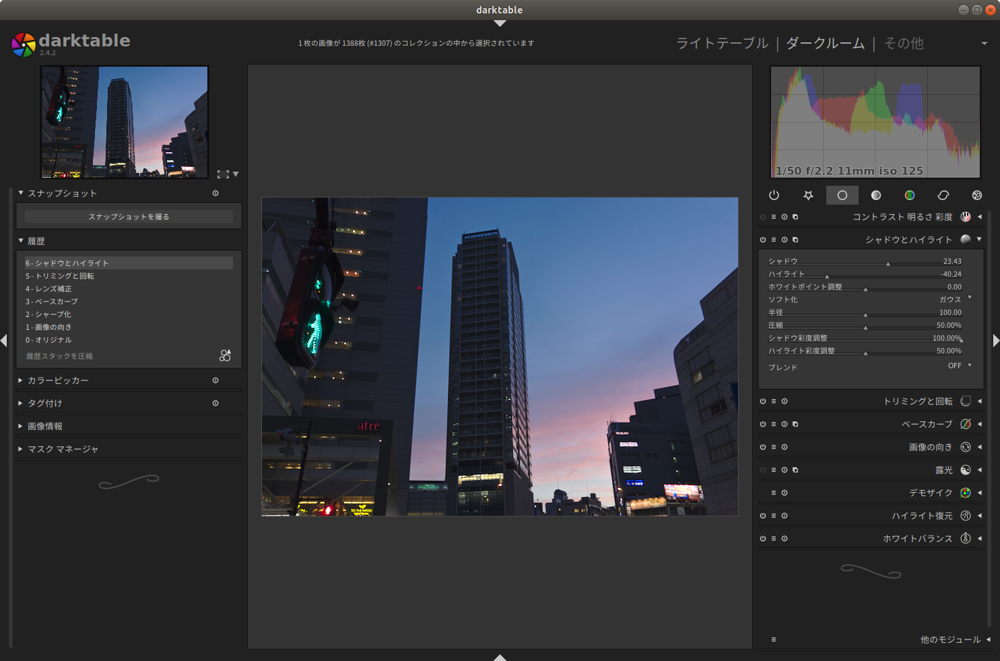

PythonとColabでできる - ゼロから作るRAW現像
デジカメは一般的にJPEG形式で画像を保存する
それに対してカメラの光センサーの情報をそのまま保存したものがRAWデータ
JPEGよりも情報量が多いので柔軟に編集できる

画像処理パイプライン

Rでできる、と言いつつRAW画像の読み込みにPythonを使う
docker pullして実行すると
docker pull igjit/r-raw-processing
docker run --rm -p 8787:8787 -e PASSWORD=xxxx igjit/r-raw-processing
原著者のGitHubリポジトリからRAWデータをダウンロード
wget https://github.com/moizumi99/camera_raw_processing/raw/master/chart.jpg
画像データをRの行列に読み込みこんで
library(reticulate)
library(imager)
rawpy <- import("rawpy")
raw_file <- "chart.jpg"
raw <- rawpy$imread(raw_file)
raw_array <- raw$raw_image
無加工で表示
raw_array %>% t %>% as.cimg %>% plot

デモザイクして表示
raw_array %>%
simple_demosaic %>%
ta %>% as.cimg %>% plot

ホワイトバランス補正、デモザイクして表示
raw_array %>%
white_balance(raw$camera_whitebalance, raw$raw_colors) %>%
simple_demosaic %>%
normalize %>%
ta %>% as.cimg %>% plot